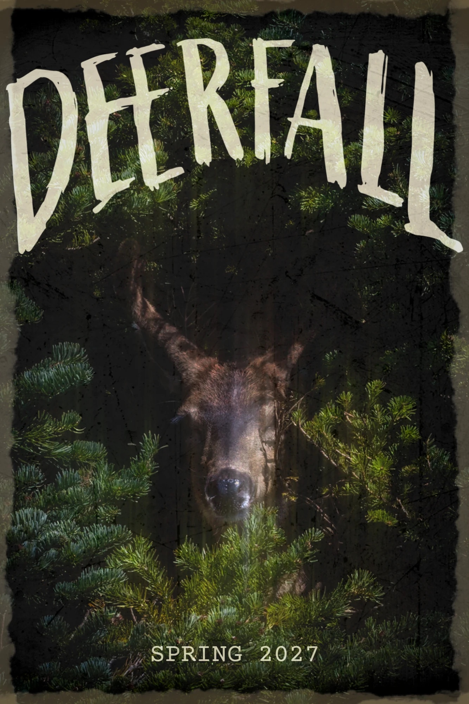
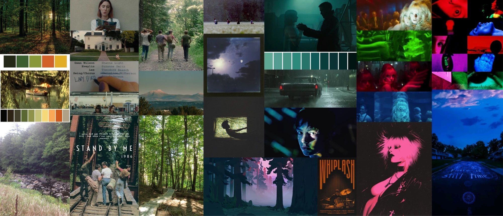
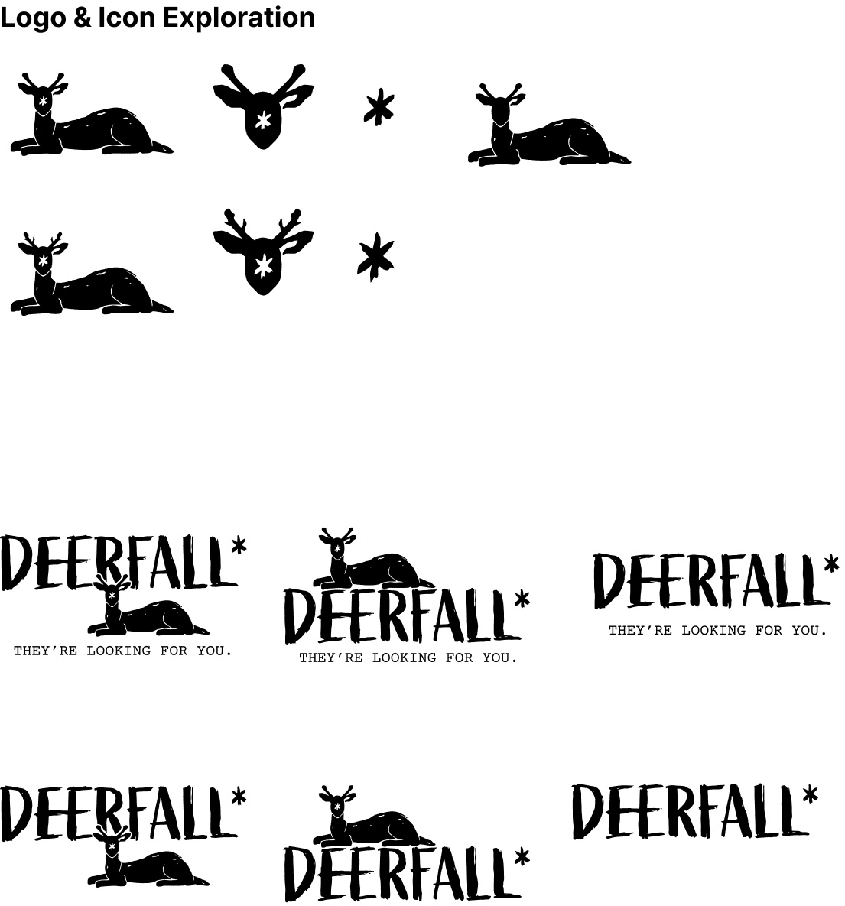
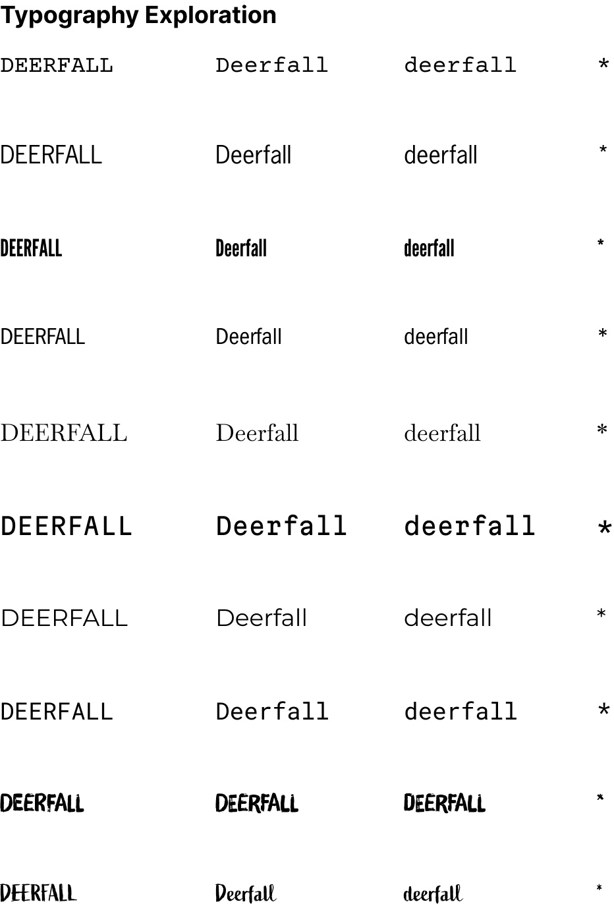
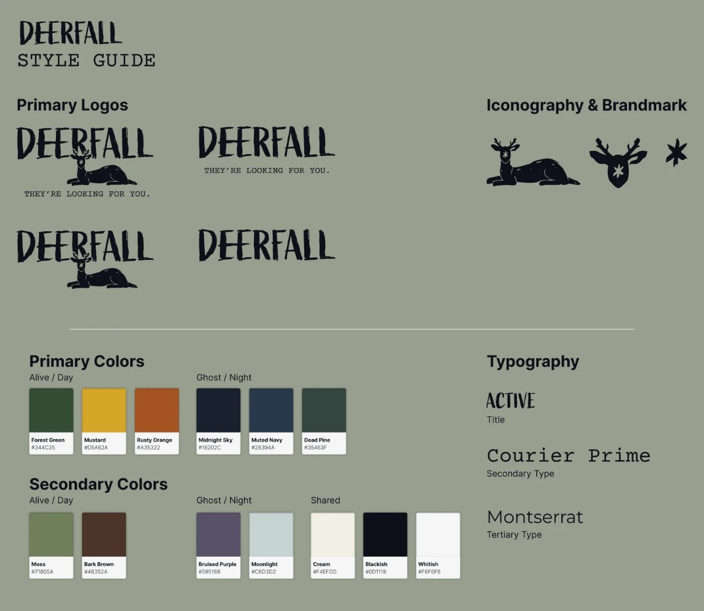
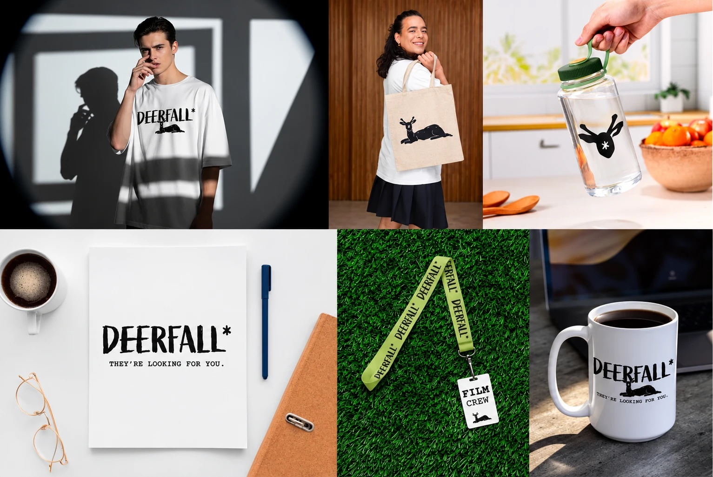
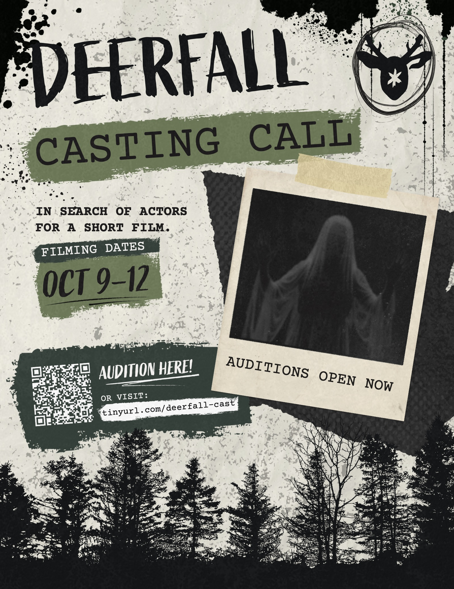

Brand identity · Short film identity · Ongoing
Deerfall
When a reserved girl is sent to live in the mountains, she begins to have strange dreams about a ghost in the woods. She teams up with a punk rock band to find the ghost, and her identity.

01
The story
- Alive, 16CharlieCurious, thoughtful, melancholic
- Dead, 15ChrisLast alive in the 1920s; wanders the mountains waiting to be truly found
- Alive, 16–17Bixie, Mason & HueSinger, bassist and drummer for DEERFALL
- Themes
- Belonging, community, coming of age, identity
The metaphor of a deerfall is one that connects the three leads thematically. The deerfall only occurs when a deer is not shot, hunted, or roadkill. It happens when an animal that feels like it has been meticulously hunted for its whole life, is able to die in private, with dignity, on its own terms.
They’re looking for you.
02
The identity
Deerfall began with the question of how a place can feel both familiar and slightly wrong. The identity uses image, type, texture, and pacing to build a world rather than simply place a mark on one.
03
Moodboard

- Film
- Stand by Me · I Saw the TV Glow · Dinner in America · Bones and All
- Music
- Hole · Dazey and the Scouts · The Distillers · Destroy Boys · HorrorPop
04
Exploration

Logo & icon exploration 
Typography exploration
05
Style guide

06
Applications


Casting call Key art